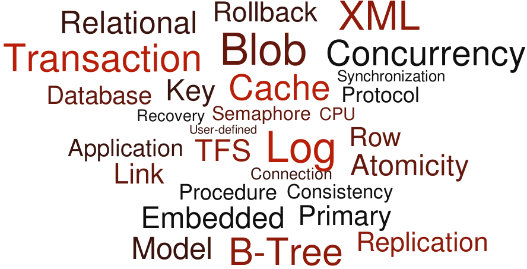

ACID – The acronym standing for the properties maintained by standard database management systems, standing for Atomicity, Consistency, Isolation, and Durability.
Application Server – An application server that processes application-specific database operations made from application client programs. The DBMS is in-process with the application code for very fast internal access.
Atomicity – The property of a transaction that guarantees that either all or none of the changes made by the transaction are written to the database.
BLOB – An abbreviation for Binary Large OBject. In SQL BLOB can be a general term for any data of type long varbinary, long varchar, or long wvarchar. It is also a specific term (and synonym) for data of type long varbinary.
B-tree – An indexing method in which the values of the columns used in the index are efficiently maintained in sorted order that also provides fast access (three or four additional disk accesses) to an individual index entry. See Wikipedia
Cache – The computer memory that is set aside to contain a portion of the database data that has most recently been accessed by the database application program. A cache is used to minimize the amount of physical disk I/O performed by the DBMS.
Cascade – A foreign key attribute that automatically migrates the changes made to a referenced (i.e., primary key) table to all of the referencing (foreign key) table rows.
Catalog – A repository for the computer-readable form of a database’s data definition meta-data. Sometimes called the system catalog or just syscat.
Client – A client-side process, containing proxy functions, connecting to a server process that contains the actual database functions.
Client/Server – A server is a program that runs on a computer in which directly manages the database. A client is a separate program (or process) that communicates with the database server through some kind of Remote Procedure Call (RPC) in order to perform application-specific database operations.
Cloud – A recently coined term used to describe an execution model for computing systems where functions and data are invoked by a name that refers to a remote system for which its location is irrelevant (hence the concept if it being “out there somewhere” like a cloud). Cloud-based systems allow thin-client interfaces to access this functionality through internet, and frequently with wi-fi, reducing the power requirements of the client computers.
Column – A single unit of named data that has a particular data type (e.g., number, text, or date). Columns only exist in tables.
Commit – The action that causes the all of the changes made by a particular transaction to be reliably written to the database files and made visible to other users.
Concurrency – The property in which two or more computing processes are executing at the same time.
Connection – The means of communication between a client and a server. A process may have multiple connections opened, each in its own thread, to one or more databases at a time.
Consistency – The property of a transaction that guarantees that the state of the database both before and after execution of the transaction remains consistent (i.e., free of any data integrity errors) whether or not the transaction commits or is rolled back.
Core/Core-level – A lower-level set of database primitives in the form of a complete API, used by database processors such as SQL or Cursors.
Cost-based Optimization – The process where data distribution statistics (e.g., the number of rows in a table) are used to guide the SQL query optimizer’s choice of the best way to retrieve the needed data from the database.
Cursor – A collection of rows grouped by a common criteria (key sequence, set membership, SELECT result set) which can be navigated and updated.
Data Type – The basic kind of data that can be stored in a column. The data types that are available in RDM SQL are: char, wchar, varchar, wvarchar, binary, varbinary, boolean, tinyint, smallint, integer, bigint, real, float, double, date, time, timestamp, long varbinary, long varchar, and long wvarchar.
Database Instance – An independent database which shares the same schema as another database. Only used in RDM Server.
db_VISTA – Original name from 1984 for the Raima DBMS product now called RDM.
DBMS – An acronym for DataBase Management System.
DDL – Database Definition Language.
Deadlock – A situation in which resources (i.e. locks) are held by two or more connections that are each needed by the other connections so that they are stuck in an infinite wait loop. For example, connection 1 has a lock on table1 and is requesting a lock on table2 that is currently held by connection 2 which is also requesting a lock on table1. There are programming practices that can be used that will prevent deadlocks from ever occurring.
Deterministic – An attribute of a section of code whereby the limit on the time required to execute the code is known, or determined, ahead of time. This is commonly associated with real-time software.
Distributed Database – A database in which its data is distributed among multiple computers or devices (nodes) allowing multiple computers to simultaneously access data residing on separate nodes. The Internet of Things (IoT) is frequently considered a vast grid of data collection devices, requiring distributed database functionality to manage.
DLL – Dynamic Link Library—a library of related functions that are not loaded into memory until they are called by the application program. All RDM APIs are contained in DLLs on those operating systems that support them (e.g., MS-Windows). These are sometimes called shared libraries on some systems.
DML – Database Manipulation Language. In SQL, such statements as UPDATE, INSERT and DELETE are considered DML.
Documentation – All Product-related materials, specifications, technical manuals, user manuals, flow diagrams, file descriptions, or other written information either received from or published. Raima’s documentation is online.
Domain – An alternate name for a base data type that is defined using the RDM SQL create domain statement.
Durability – The property of a transaction in which the DBMS guarantees that all committed transactions will survive any kind of system failure.
Dynamic DDL – The ability to change the definition of a database (its schema) after data has been stored in the database without having to take the database off-line or restructure its files.
Encryption – The encoding of data so that it cannot be understood by a human reader. This usually requires the use of an encryption key. A common encryption algorithm is called AES, which uses encryption keys of 128, 192 or 256 bits.
End-User – An entity that licenses an Application for its own use from Licensee or its Additional Reseller.
Foreign Key – One or more columns in a table intended to contain only values that match the related primary/unique key column(s) in the referenced table. Foreign and primary keys explicitly define the direct relationships between tables. Referential Integrity is maintained when every foreign key refers to one and only one existing primary key.
Grouped Lock Request – A single operation that requests locks on more than one table or rows at a time. Either all or none of the requested locks will be granted. Issuing a grouped lock request at the beginning of a transaction that includes all of the tables/rows that can potentially be accessed by the transaction guarantees that a deadlock will not occur.
GUI – Graphical User Interface.
Handle – A software identification variable that is used to identify and manage the context associated with a particular computing process or thread. For example, SQL uses handles for each user connection (connection handle) and SQL statement (statement handle) among other things.
Hash – An indexing method that provides for a fast retrieval (usually in only one additional disk access) of the row that has a matching column value.
Hierarchical Model – A special case of a network model database in which each record type can only participate as the member of one set.
Hot Spot – In a database, a hot spot is a single shared row of a table that is used and updated so often that it creates a performance bottleneck on the system.
I/O – Input/output. For a DBMS, this is normally a disk drive, used to create database durability.
IEC – International Electrotechnical Commission. Along with the ISO, the IEC controls the SQL standard (ISO/IEC 9075) and many others as well.
Implicit Locking – Done by SQL to automatically apply the locks needed to safely execute an SQL statement in a multiuser (i.e., shared database) operational environment.
Index – A separate structure that allows fast access to a table’s rows based on the data values of the columns used in the index. RDM supports two indexing types: hash and b-tree. A SQL key (not foreign key) is implemented using an index.
In-memory (Inmemory) – A feature in which the DBMS keeps the entire contents of a database or table available in computer memory at all times while the database is opened. Frequently, in-memory databases are volatile, meaning that they have little or no durability if the computer malfunctions. Durability issues are frequently prioritized below performance, which increases substantially with memory as the storage media.
In-process – When referring to a DBMS, it is in-process when the DBMS code resides in the process space of the application program that is using it. If the process is single threaded, then this is a single-user usage of the database(s). A process may have multiple threads with individual connections to a shared database, making it a multi-user database. In-process uses Local Procedure Calls (LPC) vs Remote Procedure Calls (RPC) to a database server in a separate process.
Inner Join – A join between two tables where only the rows with matching foreign and primary key values are returned.
Internet of Things – A recently coined phrase describing the extended reach of connected devices. In particular, devices that use computing power to control or sense its environment and use wifi or wires to connect to internet.
IP Address – A numerical identification tag assigned to a computing device in a network. Originally, internet IP addresses consisted of 32 bits of data, displayed as a set of four, 3-digit numbers separated by periods (e.g., 113.12.214.2). The number of available IP addresses is running out and a new standard, called IPv6 with 128 bits will expand the address space for the foreseeable future.
ISO – International Organization for Standardization. Along with the IEC, the ISO controls the SQL standard (ISO/IEC 9075) and many others as well.
Isolation – The property of a transaction that guarantees that the changes made by a transaction are isolated from the rest of the system until after the transaction has committed.
Java – A multi-platform, object-oriented programming language, similar to C++, which is freely available to any and all software developers. It is particularly important in the development of Internet/Web and mobile applications.
JDBC – Java Database Connectivity API. JDBC provides a standard database access and manipulations API for Java programs. RDM supports JDBC.
Join – An operation in which the rows of one table are related to the rows of another through common column values.
JSON – A data representation offered as a more compact but still humanly readable alternative to XML. JSON is the acronym for JavaScript Object Notation, and is frequently utilized in web/cloud based applications.
Key – A column or columns on which an index is constructed to allow rapid and/or sorted access to a table’s row.
LAN – A Local Area Network is used to interconnect the computers in a single geographic location. Contrasted to Wide Area Networks (WAN). Bandwidth (speed) is a primary difference between local and wide-area networking.
Library – The container for a set of common software API functions. Frequently a library is contained in a DLL or Shared Library.
Licensee – A customer that has obtained the right to use and/-or distribute Raima Product(s).
Local Procedure Call – A software function call to a library function that exists in-process (same computer, same process space). This is in contrast to Remote Procedure Calls (RPC) which are to functions that reside a different process, whether they are the same computer (using interprocess communication) or a remote computer (using networking). Local procedure calls are significantly faster than remote procedure calls, but require computing resources on the local (client) computer.
Locking – A method for safely protecting objects from being changed by two or more users (processes/threads) at the same time. A write (exclusive) lock allows access from only one user (process/thread) at a time. A read (shared) lock allows read-only access from multiple users (processes/threads).
Maintenance and Support – The maintenance and support services for a Product under an Agreement (Maintenance and Support Addendum).
Marks – Trademarks, trade names, service marks or logos identified on a company’s website and/or printed material.
Meta-data – “Data about data.” In a DBMS context, data stored in columns of a table have certain attributes to them such as the type, length, description or other characteristics that allow the DBMS to process the data meaningfully, or the users to understand it better.
Mirroring – The ability to copy the changes to the database made by each transaction from the master database to one or more slave databases so that exact copies of the master database are always available on the slaves.
Modification Stored Procedure – An SQL stored procedure that contains one or more INSERT, UPDATE, and/or DELETE statements.
Multi-platform – The ability for a software system to run on different computer hardware and operating systems with little or no changes.
Natural Join – A join formed between two tables where the values of identically named and defined columns are equal.
Network Model – A database in which inter-record type relationships are organized using one-to-many sets. This differs from a Hierarchical Model in that it allows a record type to be a member of more than one set. Individual rows can be retrieved using API functions that allow an application to navigate through individual set instances.
Network – An inter-connection of computers and computing devices all of which can send and receive messages from one another. The world’s largest network is the Internet in which billions of computers are connected.
NoSQL – A classification of data storage systems which are not primarily designed to be relationally accessed through the common SQL language. NoSQL systems are characterized by dynamic creation and deletion of key/value pairs, and are structured to be highly scalable to multiple computers.
Object-oriented – A computing programming paradigm which defines the computing problem to be solved as a set of objects which are members of various object classes each with its own set of data manipulation methods. Individual objects which have been instantiated (created) can only be manipulated using those prescribed methods.
Open Source Software (OSS) – Software that is released under a Software License that (1) permits each recipient of the software to copy and modify the software; (2) permits each recipient to distribute the software in modified or unmodified form; and (3) does not require recipients to pay a fee or royalty for the permission to copy, modify, or distribute the software.
Optimizer – A component of the SQL system that estimates the optimum, (i.e., fastest) method to access the database data that requested is by particular SQL SELECT, UPDATE, or DELETE statement.
Outer Join – A join formed between two tables that in addition to including the rows from the two tables with matching join column values will also include the values from one table that do not have matching rows in the other.
Page Size – The size in bytes of a database page.
Page – The basic unit of database file input/output. Database files may b organized into a set of fixed-sized pages containing data associated with one or more record occurrences (table rows).
Party – A party to an Agreement (between Raima and Customer)
PLC – Programmable Logic Controller.
Port – A network portal through which two computing processes can communicate. Where one IP Address typically identifies a device, a Port on that device identifies one of multiple potential communication channels.
Portable – Software which has been developed to be able to run on many different computer hardware and operating systems with little or no change.
Positioned Update/Delete – An SQL UPDATE or DELETE statement that modifies the current row of a cursor.
Primary Key – A column or group of columns in a given table that uniquely identify each row of the table. The primary key is used in conjunction with a foreign key in another (or even the same) table to related the two tables together. For example, the primary key in an author table would match the foreign key in a book table in order to relate a particular author to that author’s books.
Process – An instance of the execution of a program on a single computer. A process can consist of one or more threads executing, more or less, concurrently. The private memory used by a process cannot be accessed by any other process.
Product – The Raima software product(s) licensed to Licensee under an Agreement, including all bug fixes, upgrades, Updates, and releases. Product(s) does not include any Third Party Software or any OSS that may be included and distributed with the Product(s).
Protocol – A specific method in which messages are formulated, formatted, and passed between computers in a network. Internet messages are passed between computers using the TCP/IP protocol.
Query – A complete SELECT statement that specifies 1) the columns and tables from which data is to be retrieved, 2) optionally, conditions that the data must satisfy, 3) optionally, computations that are to be performed on the retrieved column values, and 4) optionally, a desired ordering of the result set.
RDM – Raima Database Manager. Formerly called RDM Embedded.
RDM Server – Raima’s client/server DBMS originally released on 1993, named RDS (Raima Database Server), Velocis, and finally RDM Server. Still supported for existing customers.
Read-only Transaction – A Multi-Version Concurrency Control (MVCC) feature that allows database data to be read by one process without blocking another process’s modification of that same data. Frequently referred to as a “snapshot.”
Real-time – A real-time environment is one in which specific tasks must be guaranteed to execute within a specified time interval. For a DBMS to be considered truly real-time, it must be able to perform specific database-related tasks in a time that can be deterministically demonstrated—i.e., the worst case execution time can be demonstrated. Because a general-purpose DBMS deals with dynamic data in which the sizes of tables vary over time and since DBMS response times depend on the amount of data to be processed they cannot be considered as real-time. This is true also for RDM. It is real-time friendly, because it is fast, has a small footprint and has features (such as virtual tables and in-memory storage) that allow it to be used in beneficial ways in a real-time application.
Record Instance/Occurrence – One set of related data field values associated with a specific record type—equivalent to an SQL row.
Record Type – A collection of closely related data fields—equivalent to an SQL table. Similar to a C struct, a record type is defined by a set of closely related data fields.
Referential Integrity – A condition in which the foreign key column values in all of the rows in one table have matching rows in the referenced primary key table. Referential integrity is maintained by SQL during the processing of an INSERT and DELETE statement and any UPDATE statement that modifies a foreign or primary key value.
Relational Model – A database in which inter-table relationships are primarily organized through common data columns which define a one-to-many relationship between a row of the primary key table and one or more rows of the matching foreign key table. Equi-joins relate tables that have matching primary/foreign key values, but other comparisons (relationships) may be defined. Besides describing how the database tables are related, the relational model also defines how the related data can be accessed and manipulated. SQL is the most commonly used relational model database language.
Remote Procedure Call – A method of interprocess communication where a function residing within another process is called as though it is a local (in-process) function. The method is implemented through a local proxy function and a remote stub function. Parameter values are marshalled into a block of data that can be transmitted from the proxy to the stub for demarshalling and calling the actual function. Return values are processed in the same way as input values.
Replication – A process where selected modifications in a master database is replicated (re-played) into another database.
Restriction Factor – Each relational expression specified in the WHERE clause of a query has an associated restriction factor that is estimated by the SQL optimizer that specifies the fraction (or percentage) of the table for which the expression will be true. For example, in the query select * from book where bookid = ‘austen013px’ the relational expression bookid = ‘austen013px’ has a restriction factor equal to .003 (only one out of 3213px rows will satisfy this expression).
Result Set – The complete set of rows that is returned by a particular SELECT statement.
Rollback – An operation, usually performed by the SQL ROLLBACK statement, that discards all of the changes made by all INSERT, UPDATE and DELETE statements that have been executed since the most recently started transaction (e.g., START TRANSACTION statement).
Row – One set of related values for all of the columns declared in a given table. Also known as a record occurrence.
Royalty – A License fee set forth in an Agreement (Product and Pricing Addendum).
Runtime – A portion of a DBMS that is included within the process space of an application program.
Scalability – A software system is scalable when its performance and overall system throughput continues to improve as more computing resources are made available for its use. This usually comes in the form of the number of CPUs and cores available in the computer on which the software system is run.
Scalar Function – Either a built-in SQL function or a user-defined function that returns a single value computed only from the values of any required arguments at the time the function is called.
Schema – A representation of the structure of a database. It may be graphical or textual. Graphical representations typically involve the use of boxes that represent database tables and arrows that represent inter-table relationships. Textual schema representations utilize Database Definition Language (DDL) statements to describe a database design.
Searched Update/Delete – An SQL update or delete statement in which the rows to be updated/deleted are those for which the conditional expression specified in the WHERE clause is true.
Seat – A copy of a Product, or any of its components, installed on a single machine.
Semaphore – A primitive computing operation that is used to synchronize shared access to data. Sometimes called a “mutex” meaning a “mutually exclusive section”. Semaphores control concurrent access to data by restricting access to critical sections of code that manipulate that data.
Server (Software) – A Seat that resides on a single Server machine and is capable of accepting connections from one or more Seats residing on Client machines.
Set – A method used to implement the one-to-many relationship formed between two tables based on their foreign and primary key declarations. The term “set” comes from the CODASYL Network Model definition. A set may be employed in a relational database when an owner (primary key) table and a member (foreign key) table where all of the member table rows that are related to the same owner table row are connected together with a linked list.
Source Code (Raima) – The English language source code version of a Product, and any accompanying comments or other programmer Documentation, provided by Raima to Licensee pursuant to the terms of an Agreement. The capitalized term Source Code as used in an Agreement does not include OSS.
SQL – The standardized and commonly accepted language used for defining, querying and manipulating a relational database. The etymology of “SQL” is unclear, possibly a progression from “QueL” (Query Language) to “SeQueL” to “SQL.” However, some experts don’t like the expansion “Structured Query Language” in that its structure is inconsistent and a historical patchwork.
Stored Procedure – A named and optionally parameterized compiled set of SQL database access statements that can be executed as a unit through a call to the stored procedure.
Synchronization – The implementation method (frequently using semaphores) by which concurrently executing multiple computer threads or processes can safely access and update shared data.
System Catalog – See catalog.
Table – A collection of closely related columns. A table consists of rows each of which shares the same columns but vary in the column values.
Third Party Software – Software that is licensed separately by a third party with the Product(s) or Documentation.
Thread – A single, sequential execution of a computer program or program segment. A program can consist of one or more concurrently executing threads. Where multiple threads access the same data, some kind of synchronization method needs to be employed to ensure that the data is only accessed by one thread at a time.
Timeout – Occurs when a lock request has waited longer than the prescribed wait time for the request to be granted.
Transaction Log – A sequential record of all of the database changes made by each transaction in the order they were issued. The transaction log is used to ensure that a database conforms to the ACID properties. Transaction logs are also used to mirror or replicate data to other databases.
Transaction – A set of logically related database modifications that are written to the database as a unit. The database changes associated with a given transaction are guaranteed by the DBMS to be either completely written to the database or, in the event of a system failure, none are written. The state of the database both before and after a transaction will be consistent with its design.
Transactional File Server (TFS) – An architectural piece of Raima’s RDM system which may be linked in-process with application code or executed separately as a server process. Its responsibility is to perform all of the database file input and output, serving up database pages to the RDM Runtime library as requested, controlling read-only transactions, and committing all transaction change logs to the database.
Transactional Stored Procedure – A modification stored procedure in which the database changes made by the procedure are encapsulated in its own transaction.
Update (of Product) – A Product that has been modified in a minor way, including but not limited to bug fixes, and has been furnished to Licensee under this Agreement. An Update is represented by a Product version number that increments to the right of the decimal point.
Upgrade (of Product) – A Product that has been modified in a major way, and is released as a new version of the Product. An Upgrade is represented by a Product version number that increments to the left of the decimal point.
Use – Storing, loading, installing, and/or running a Product, or displaying screens generated by a Product.
User-defined Function – An application-specific SQL callable scalar or aggregate function written in C.
User-defined Procedure – An application-specific function written in C and invocable through use of the SQL call statement.
Velocis – Former name of a DBMS product now called RDM Server.
Virtual Table – An SQL table that is defined through a set of application-specific, C functions that conform to a particular interface specification that allow a non-database data source (e.g., a device, etc.) to be accessed as if it was a conventional SQL table.
WAN – A Wide Area Network, as contrasted to Local Area Networks (LAN), Normally WAN refers to Internet. Bandwidth (speed) is a primary difference between local and wide-area networking.
Wi-Fi – The common name for standardized local-area wireless technology.
XML – Extensible Markup Language. XML documents are much used in the Internet’s World-Wide Web but are also used in many computing contexts in which data needs to be shared.